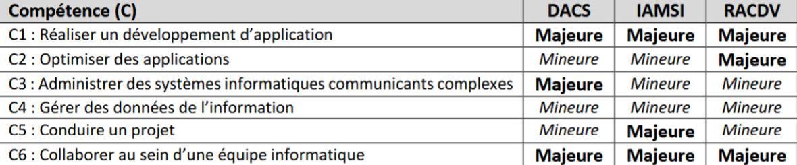
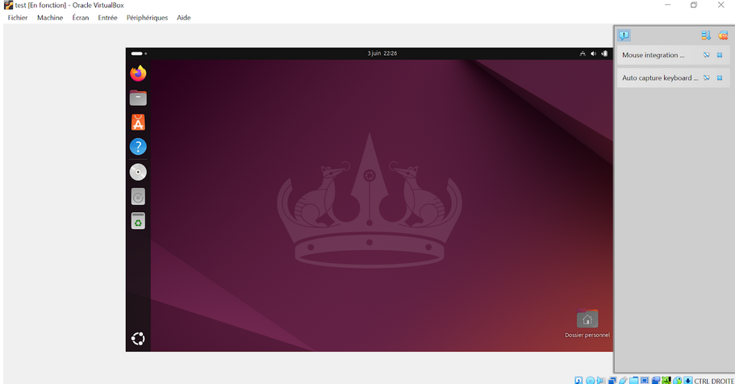
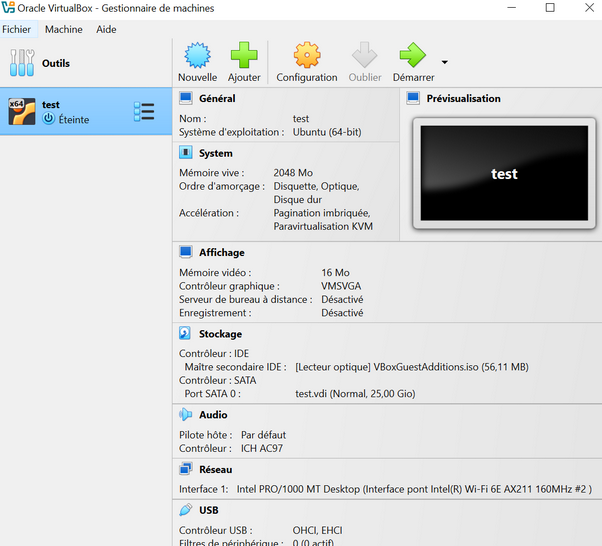
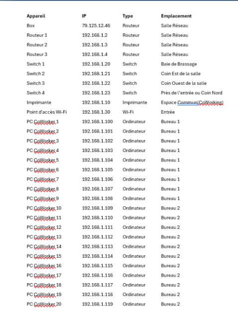
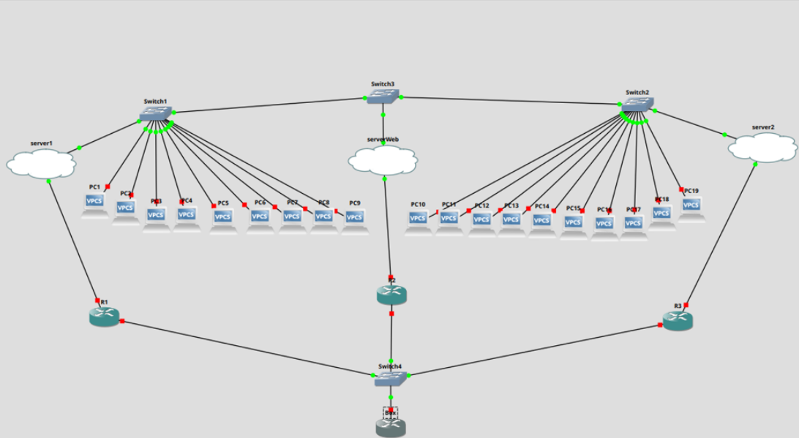
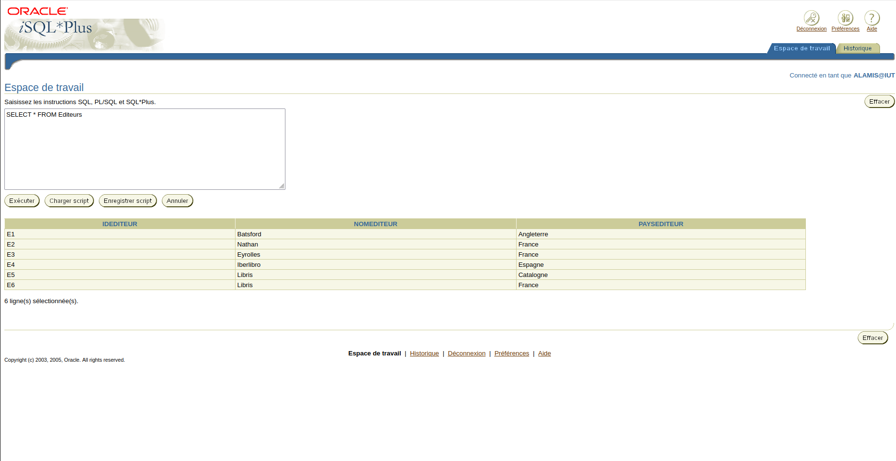
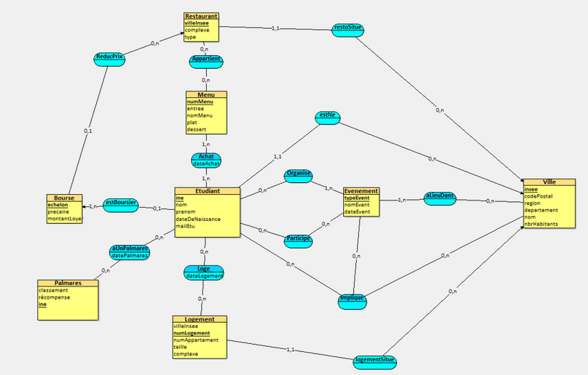
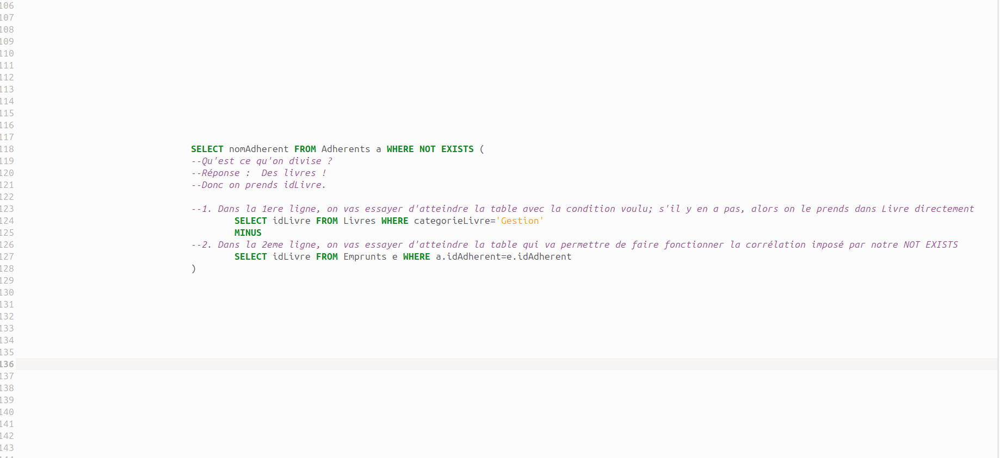
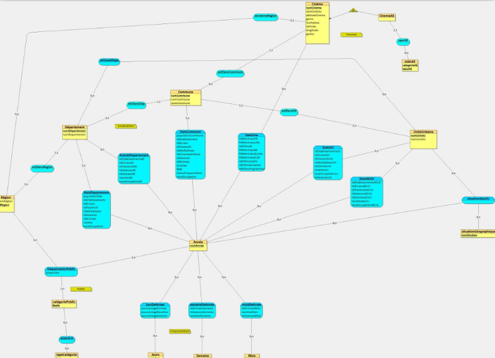

Portfolio d'aprentissage : Parcours RACDV
Résumé des 3 compétences mineures...

→ Liste des compétences mineures s’arrêtant au BUT 2 :
Compétence 3 : Administrer des systèmes d'informations communicants complexes
SAE 1.03 - Contexte
25 Novembre 2024 - Equipe de 2 étudiants - 3h.
Dans le cadre de la SAE 1.03, le but ici était de mettre en place une machine virtuelle faisant fonctionner un système d’exploitation Linux nommé “Ubuntu”
et de créer un DualBoot pour ajouter un autre système d’exploitation sur le PC et ainsi faire en sorte que le PC possède deux systèmes d’exploitation (Windows et Ubuntu).
Nous avons été contraints de réaliser tout cela en moins de 3 heures et de faire en sorte que tout fonctionne afin de présenter notre travail à l’oral.
Objectif
Installer Ubuntu sur un PC en dual boot et l’installer également sur Windows à travers une machine virtuelle. Ici nous avons proposé également un document détaillant les forces et faiblesses de chacune des solutions proposé tout en fournissant également une notice d’installation pour chaque solution. Ici nous avons un lien très bref avec la compétence C3 mais elle reste tout de même nécessaire à la compréhension des concepts fondamentaux des systèmes informatiques. Il faut bien évidemment savoir comment fonctionne les systèmes utilisés dans nos PC avant de les faires communiquer entre eux
CE associés a ce projet :
CE 3 En offrant une qualité de service optimale
Cette composante essentielle s’intègre dans ce projet car l’installation et la configuration des systèmes d’exploitation devaient garantir un fonctionnement stable et fiable. Le dual boot ainsi que la machine virtuelle devaient être correctement configurés afin d’assurer une utilisation fluide et éviter les erreurs lors du démarrage ou de l’exécution du système :

CE 4 En assurant la continuité d'activité
En mettant en place des mesures permettant de maintenir le fonctionnement des services et des systèmes en cas d’incident, afin de garantir la disponibilité des ressources et de limiter les interruptions d’activité :

Éléments de cours associés :
Pour réaliser ce projet, nous nous sommes d’abord initiés au fonctionnement du système Linux. Cela passait par des actions simples comme se familiariser avec le terminal à l’aide de commandes de base, découvrir une interface différente de Windows et apprendre les bases du Bash, notamment avec l’écriture de premiers scripts simples. Nous avons ensuite commencé à découvrir le principe de la virtualisation en utilisant VirtualBox afin de proposer une alternative à l’installation d’Ubuntu en dual boot.
SAE 2.03 - Contexte
1er mars 2025 – Équipe de 4 étudiants - 3 mois.
Dans le cadre de la SAE 2.03, nous devions répondre aux besoins d’un client souhaitant mettre en place
un réseau informatique pour son entreprise. Le projet consistait à réfléchir à une infrastructure
réseau adaptée à son activité, tout en prenant en compte des critères comme la fiabilité, la
sécurité et l’organisation du réseau. Pour cela, nous avons étudié différentes architectures réseau
afin de déterminer les solutions les plus pertinentes à proposer.
Pour cela, nous avons été contraints de nous baser sur une liste précise de technologies à utiliser, imposée par notre cliente.
Objectif
L’objectif de ce projet était de concevoir et proposer une architecture réseau répondant aux besoins du client. Après avoir étudié plusieurs solutions possibles, nous avons modélisé le réseau à l’aide de l’outil GNS3 afin de simuler son fonctionnement. Cette simulation nous a permis de représenter concrètement l’infrastructure réseau envisagée et de vérifier la cohérence de notre proposition avant de la présenter.
CE associés a ce projet :
CE 1 En sécurisant le système d'information
Dans ce projet, la sécurisation du système d'information passait également par une organisation claire du réseau. Nous avons donc mis en place un plan d’adressage IP permettant de structurer les différentes machines et équipements du réseau. Cette organisation facilite l’administration du réseau, permet de mieux identifier les équipements connectés et constitue une première étape importante pour appliquer des mesures de sécurité comme la segmentation ou le contrôle des accès entre différentes parties du réseau.

CE 2 En appliquant les normes en vigueur et les bonnes pratiques architecturales et de sécurité
Dans ce projet, nous avons conçu une architecture réseau structurée afin de respecter certaines bonnes pratiques en matière d’organisation et de sécurité. À l’aide de l’outil GNS3, nous avons modélisé un réseau comprenant différents équipements comme des routeurs et des switches, permettant de représenter la circulation des données entre plusieurs machines. Cette simulation nous a permis de réfléchir à l’organisation du réseau et à la manière de relier les différents équipements tout en conservant une architecture claire et cohérente.

Éléments de cours associés :
Dans le cadre des enseignements liés aux réseaux, nous avons été initiés à l’utilisation de l’outil GNS3 à travers différents travaux pratiques. Ces séances nous ont permis de découvrir les composants de base d’un réseau informatique, comme les routeurs, les switches et les machines clientes. Nous avons également appris à simuler le fonctionnement d’un réseau en réalisant des tests de communication entre différentes machines virtuelles à l’aide de commandes comme le ping dans le terminal. Ces manipulations nous ont permis de vérifier la connectivité entre les équipements et de mieux comprendre le fonctionnement des échanges de données au sein d’un réseau.
Compétence 4 : Gérer des données de l'information
SAE 1.04 - Contexte
15 décembre 2024 – Équipe de 4 étudiants - 1 mois et demi.
Dans le cadre de la SAE 1.04, nous devions concevoir une base de données autour d’un thème choisis.
Dans notre cas, le projet portait sur le CROUS. Ce travail avait pour but de nous familiariser avec
les concepts fondamentaux des bases de données relationnelles ainsi qu’avec l’utilisation du langage
SQL. À travers ce projet, nous avons appris à structurer des données, créer des tables et manipuler
les informations à l’aide de différentes requêtes SQL.
Pour réaliser cette base de données, nous avons été contraints d’utiliser uniquement les technologies vues en classe,
et non de recourir à d’autres solutions comme une base de données sur Excel.
Objectif
L’objectif de ce projet était de concevoir et d’implémenter une base de données fonctionnelle permettant de gérer différentes informations liées au CROUS. Pour cela, nous avons utilisé le langage SQL afin d’effectuer des opérations courantes sur les données comme l’ajout, la modification ou la consultation d’informations à travers des commandes telles que SELECT, INSERT ou UPDATE. Dans un second temps, nous avons également réfléchi aux aspects de sécurité de la base de données, en essayant d’identifier certaines vulnérabilités possibles et en nous mettant dans la position d’une personne malveillante cherchant à accéder ou manipuler les données.
CE 2 En respectant les enjeux économiques, sociétaux et écologiques de l'utilisation du stockage de données
Dans ce projet, nous avons utilisé le système de gestion de base de données MySQL afin de structurer et gérer efficacement les informations liées à notre base de données. L’utilisation d’un SGBD permet d’organiser les données de manière optimisée, d’éviter les redondances et de faciliter leur gestion. Une base de données bien structurée permet également de limiter le stockage inutile de données, ce qui contribue à une meilleure utilisation des ressources informatiques et des infrastructures de stockage comme les serveurs ou les data centers.

CE 2 En respectant les enjeux économiques, sociétaux et écologiques de l'utilisation du stockage de données, ainsi que les différentes infrastructures (data centers, cloud, etc.)
Dans ce projet, nous avons conçu un modèle Entité-Association (EA) afin de structurer les données de manière cohérente avant la création de la base de données. Cette étape permet d’organiser les informations en différentes entités et relations tout en évitant les redondances de données. Une base de données bien structurée permet d’optimiser le stockage des informations et de limiter l’utilisation inutile de ressources informatiques. Cette organisation contribue indirectement à réduire l’impact lié au stockage des données sur les infrastructures telles que les serveurs ou les data centers.

Éléments de cours associés :
Dans le cadre des enseignements liés aux bases de données, nous avons tout d’abord étudié les principes de l’algèbre relationnelle, notamment des opérations comme la projection (Project) ou la sélection (Select), afin de comprendre les fondements du fonctionnement des bases de données relationnelles. Nous avons également appris la syntaxe de base du langage SQL, aussi bien pour l’interrogation des données à l’aide de requêtes comme SELECT ou WHERE, que pour la création et la structuration des tables avec des commandes telles que CREATE TABLE ou l’utilisation de clés étrangères avec REFERENCES. Enfin, nous nous sommes familiarisés avec l’utilisation du système de gestion de base de données MySQL afin de pouvoir manipuler et administrer une base de données de manière concrète lors des travaux pratiques.
SAE 2.04 - Contexte
2 mars 2025 – Équipe de 4 étudiants - 2 mois et demi
Dans le cadre de la SAE 2.04, le projet portait sur l’optimisation et la conception avancée
d’une base de données. Contrairement à la SAE 1.04 qui visait principalement l’initiation
aux bases de données, cette SAE mettait davantage l’accent sur la structuration et
l’optimisation des données. À partir de plusieurs fichiers Excel fournis ainsi que d’un
texte explicatif décrivant le système étudié, nous devions analyser les informations
présentes afin de concevoir une base de données cohérente et correctement organisée.
Pour cela, nous avons été contraints d’utiliser des outils tels que DBeaver et des concepts comme les vues,
afin de nous permettre d’être plus efficaces lors de l’optimisation.
Objectif
L’objectif du projet était de concevoir un modèle Entité-Association (E/A), puis de le transformer en schéma relationnel avant de créer la base de données correspondante. Les données issues des fichiers Excel devaient être intégrées tout en limitant au maximum la redondance des informations. Ce travail nous a également permis de découvrir des concepts plus avancés liés aux bases de données, comme l’héritage entre entités, les contraintes d’inclusion, d’exclusion et d’intégrité fonctionnelle (CIF), ainsi que l’utilisation de relations ternaires. L’implémentation et les manipulations ont été réalisées à l’aide des outils DBeaver et MySQL.
CE 3 En s'appuyant sur des bases mathématiques
La conception et l’exploitation d’une base de données reposent sur des principes issus des mathématiques, notamment de l’algèbre relationnelle. Dans ce projet, nous avons utilisé différentes requêtes SQL permettant de réaliser des opérations proches de calculs mathématiques ou d’opérations ensemblistes. Par exemple, des fonctions d’agrégation comme SUM ou AVG permettent d’effectuer des calculs sur un ensemble de données, tandis que des opérations comme MINUS permettent de comparer deux ensembles de résultats. Nous avons également utilisé des combinaisons de requêtes, comme NOT EXISTS associé à MINUS, afin de simuler des opérations plus complexes proches de la division relationnelle. Ces manipulations montrent que la gestion de données repose sur des principes logiques et mathématiques permettant d’analyser efficacement les informations stockées dans la base de données.

CE 4 En assurant la cohérence et la qualité
Afin d'assurer la cohérence et la qualité des données, nous avons conçu un modèle Entité-Association (EA) plus complet et structuré que lors des projets précédents. Ce modèle permet de représenter clairement les différentes entités, leurs attributs ainsi que les relations qui les relient. Cette étape est essentielle pour garantir une base de données cohérente, éviter les incohérences ou les duplications de données et faciliter la transformation du modèle conceptuel vers un schéma relationnel. La conception de ce modèle nous a permis de vérifier la logique globale de la base de données avant son implémentation dans le SGBD.

Éléments de cours associés :
Dans le cadre des enseignements associés à ce projet, l’accent a été mis sur l’optimisation des requêtes et sur l’approfondissement des concepts de modélisation des bases de données. Nous avons notamment étudié les relations ensemblistes et logiques entre entités, comme l’héritage, la composition ou encore la réflexivité, afin de mieux structurer les données dans un modèle cohérent. Nous avons également appris à utiliser des requêtes SQL plus avancées, incluant des fonctions d’agrégation comme SUM ou AVG, ainsi que des opérateurs comme NOT IN ou NOT EXISTS. L’utilisation de requêtes imbriquées nous a permis d’effectuer des traitements plus complexes sur les données, par exemple en simulant certaines opérations issues de l’algèbre relationnelle, comme la division, à l’aide de combinaisons de requêtes telles que NOT EXISTS et MINUS.
Compétence 5 : Conduire un projet
Contenu de la compétence 5 ici...